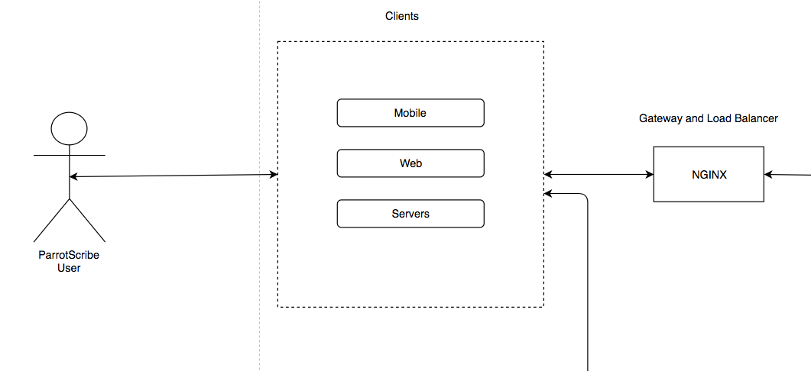
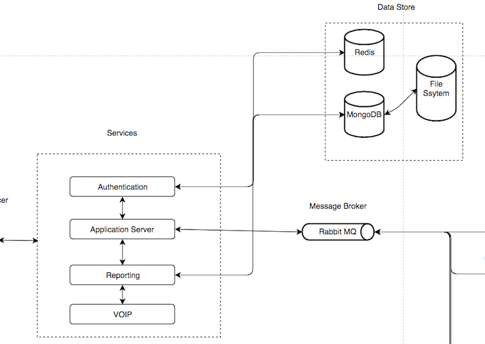
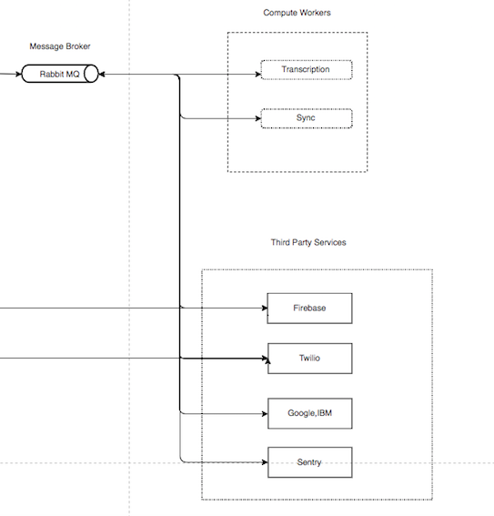

The ParrotScribe platform allows companies to leverage artificial intelligence to gain valuable data from audio based communication to enhance compliance and customer satisfaction.
Key Market Opportunities
Reguation & Compliance
Privacy
Customer Insight
System Overview
Interface and Load Balancer
Services and DataStore
Message Broker and Compute Workers
